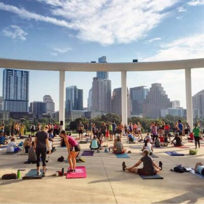

Ways To Help
Tell us what you are interested in, and DANA can help match you with the right next step.
Volunteer
Help with events, cleanups, neighbor outreach, or one issue you care about.

Showing Up
Volunteer work can be as simple as helping at an event, sharing an update, joining a cleanup, or following one issue closely.
Tell us what you are interested in, and DANA can help match you with the right next step.